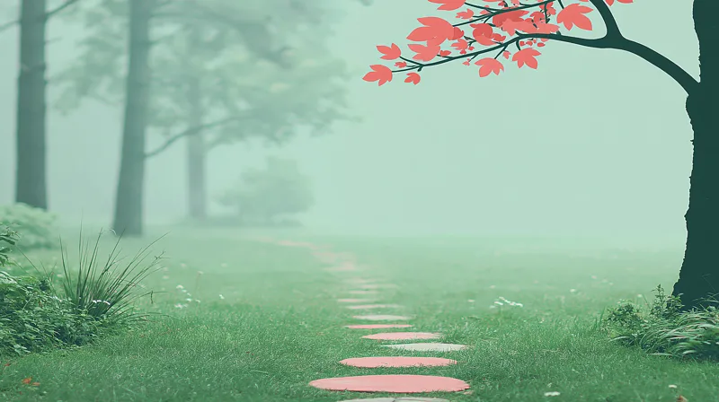
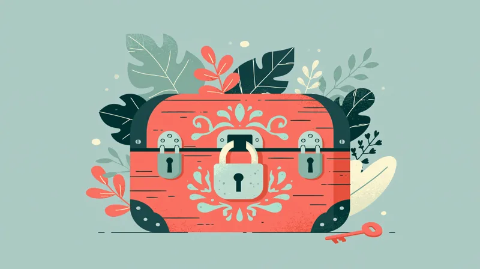
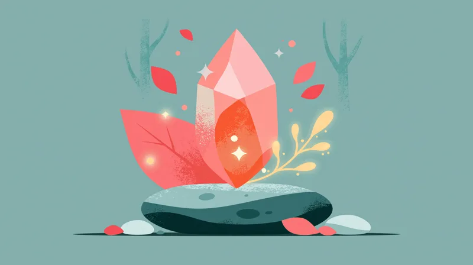
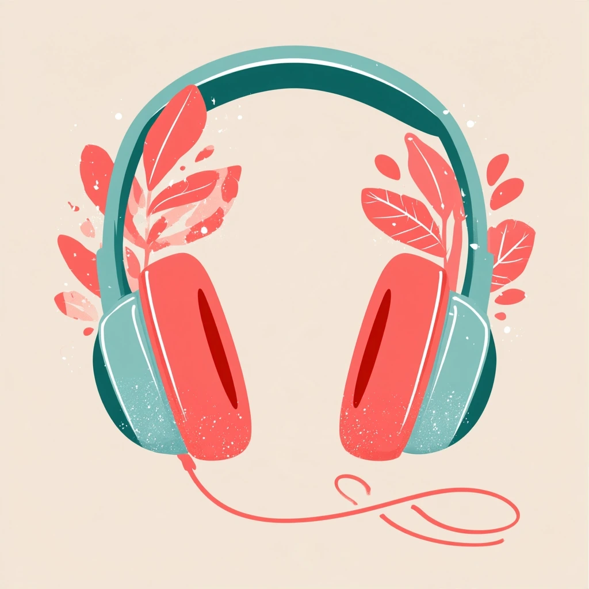
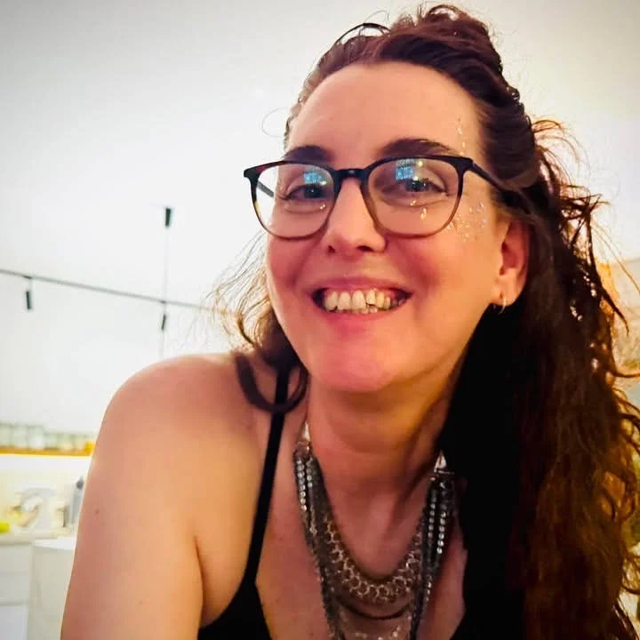

שבוע ראשון · ימים 1–7
לראות
להבחין במה שכבר יש, לזהות משאבים ואפשרויות ולתת מקום לרצונות.

מה משתנה כשאנחנו מתחילים להסתכל על החיים קצת אחרת?
21 ימים של מדיטציות, תרגילי התבוננות ותרגול יומי, שיעזרו לכם להרחיב את נקודת המבט, לזהות אפשרויות חדשות ולפתוח מקום לרצונות ולעשייה.
כשאנחנו עסוקים במה שחסר, במה שלא עובד ובמה שעוד צריך לפתור, קל לפספס את מה שכבר נמצא סביבנו.
במסע הזה נרחיב את תשומת הלב, נפגוש דפוסים והרגלים מוכרים, נבחן אמונות שמגבילות אותנו ונגלה דרכים חדשות לחשוב, לרצות ולפעול.
להבחין במה שכבר יש, לזהות משאבים ואפשרויות ולתת מקום לרצונות.

לפגוש אמונות והרגלים שמצמצמים אותנו, ולבחון מחדש את היחסים שלנו עם כסף, מחסור, גבולות ונתינה וקבלה.

לפתוח מקום לסקרנות ולרעיונות חדשים, לזהות את הערך שאנחנו מביאים ולחבר בין הרצונות שלנו לצעדים ממשיים.

בכל יום מחכה לכם תרגול קצר שמורכב משלושה חלקים:

21 מדיטציות מקוריות, מוקלטות בקולי, באורך 7–15 דקות, עם נשימה, דמיון מודרך והתבוננות.
כתיבה או התבוננות שמחברות את נושא היום לחיים שלכם.
הודעה יומית עם הנחיות ומשימה, וסימון ההתקדמות שלכם לאורך המסע. מתחילים יחד, מתקדמים יחד.
כל התכנים יישארו זמינים גם אחרי סיום המסע.
למי שרוצה לצאת קצת מהאוטומט, להסתכל על החיים מזווית חדשה, לבחון הרגלים ואמונות, לתת מקום לרצונות ולגלות אפשרויות נוספות.
אין צורך בניסיון קודם במדיטציה או בכתיבה. רק סקרנות ונכונות להקדיש כמה דקות ביום.

במשך שנים, בכל פעם שהייתי זקוקה לפרויקט חדש או ללקוח, הייתי עושה משהו שאפשר לקרוא לו זימון. מתוך הניסיון האישי שלי, הסתקרנתי להבין מה עומד מאחורי התהליך הזה.
אחרי שהתנסיתי כמה פעמים באתגרי שפע, החלטתי ליצור מסע משלי. לקחתי רעיונות וכלים מעולמות המדיטציה וההתפתחות האישית, וחיברתי אותם לניסיון המקצועי שלי, יותר מ־20 שנה בעיצוב חוויות משתמש ובבניית תהליכים.
כך נולד להעיר את השפע: מסע מקורי שיצרתי וכתבתי בעצמי, עם מדיטציות בקולי ואיורים שיצרתי במיוחד עבורו. תהליך בגובה העיניים, שמחבר בין התבוננות פנימית לחיים עצמם.
21 ימים. תרגול יומי. מסע אחד שעושים ביחד.